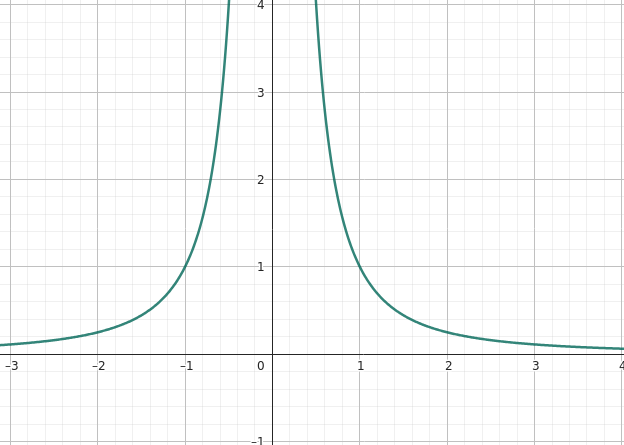
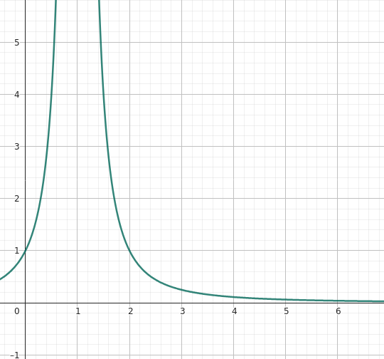
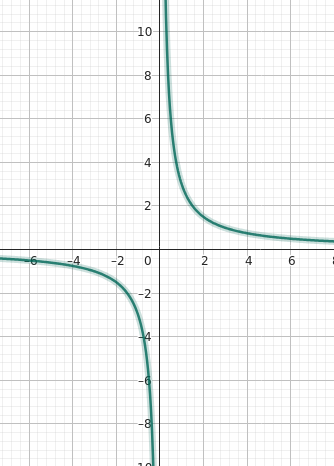
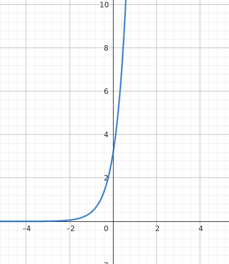
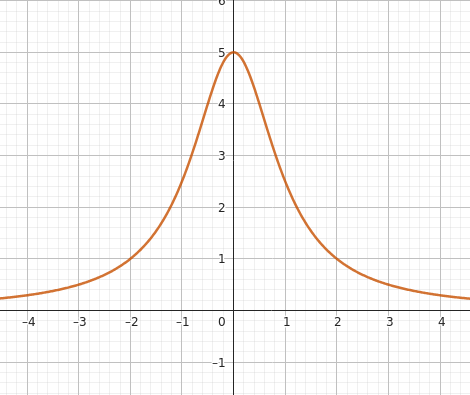
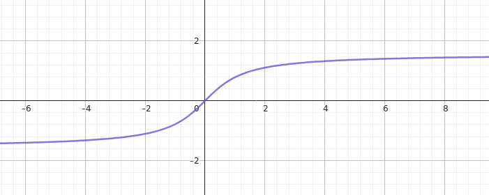
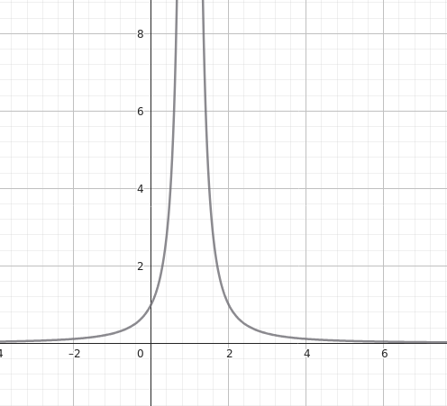
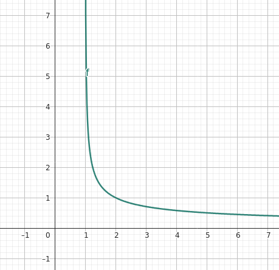
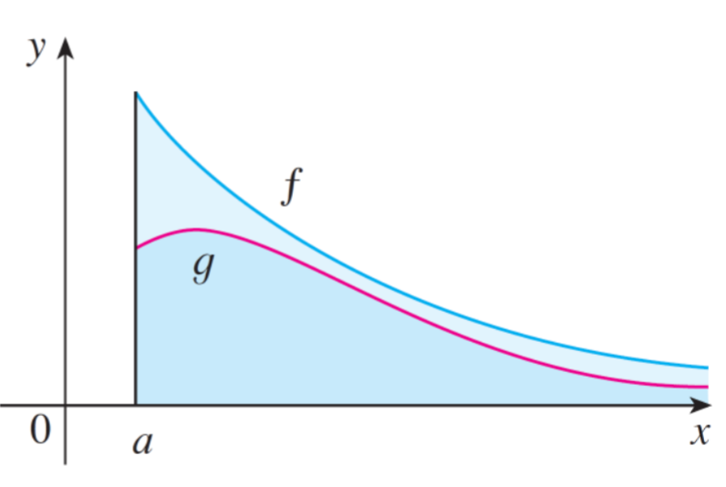

Integrales impropias y Criterio de Convergencia
¿Qué es una integral impropia?
Una integral impropia es una integral definida en un intervalo que no es acotado o que tiene una discontinuidad en uno de sus extremos. Estas integrales pueden ser convergentes o divergentes, dependiendo del comportamiento de la función integranda. Hay dos tipos principales de integrales impropias:
Integrales con límites infinitos: Estas integrales tienen uno o ambos límites de integración como infinito. Por ejemplo, \(\int_{a}^{\infty} f(x) \, dx\) o \(\int_{-\infty}^{b} f(x) \, dx\).
Integrales con discontinuidades: Estas integrales tienen un punto de discontinuidad en el intervalo de integración. Por ejemplo, \(\int_{a}^{b} f(x) \, dx\) donde \(f(x)\) tiene una discontinuidad en algún punto dentro del intervalo \([a, b]\).
Tipo 1
\[ \int_{a}^{\infty} \frac{1}{x^2} \, dx \]

Tipo 2
\[ \int_{0}^{4} \frac{1}{(x-1)^2} \, dx \]

Ejercicio 1
Calcular la integral impropia: \[ \int_{e}^{\infty} \frac{3}{x} \, dx \]

Redefinimos la integral impropia como el límite de una integral definida: \[ \int_{e}^{\infty} \frac{3}{x} \, dx = \lim_{b \to \infty} \int_{e}^{b} \frac{3}{x} \, dx \] Ahora, calculamos la integral definida: \[ \int_{e}^{b} \frac{3}{x} \, dx = 3 \ln|x| \Big|_{e}^{b} = 3 (\ln|b| - \ln|e|) = 3 \ln\left(\frac{b}{e}\right) \] Ahora, tomamos el límite cuando \(b\) tiende a infinito: \[ \lim_{b \to \infty} 3 \ln\left(\frac{b}{e}\right) = 3 \lim_{b \to \infty} (\ln b - 1) = 3 \cdot \infty = \infty \]
Ejercicio 2
Calcular la integral impropia: \[ \int_{-\infty}^{4} \pi \cdot e^{2x} \, dx \]

Redefinimos la integral impropia como el límite de una integral definida: \[ \int_{-\infty}^{4} \pi \cdot e^{2x} \, dx = \lim_{a \to -\infty} \int_{a}^{4} \pi \cdot e^{2x} \, dx \] Integramos: \[ \int_{a}^{4} \pi \cdot e^{2x} \, dx = \frac{\pi}{2} e^{2x} \Big|_{a}^{4} = \frac{\pi}{2} (e^{8} - e^{2a}) \] Ahora, tomamos el límite cuando \(a\) tiende a menos infinito: \[ \lim_{a \to -\infty} \frac{\pi}{2} (e^{8} - e^{2a}) = \frac{\pi}{2} (e^{8} - 0) = \frac{\pi}{2} e^{8} \]
Ejercicio 3
Calcular la integral impropia: \[ \int_{- \infty}^{\infty} \frac{5}{x^2 + 1} \, dx \]

Lo separamos en dos integrales impropias: \[ \int_{- \infty}^{\infty} \frac{5}{x^2 + 1} \, dx = \int_{-\infty}^{0} \frac{5}{x^2 + 1} \, dx + \int_{0}^{\infty} \frac{5}{x^2 + 1} \, dx \] Y cada una de ellas la resolvemos como una integral impropia, empezando por la primera: \[ \int_{-\infty}^{0} \frac{5}{x^2 + 1} \, dx = \lim_{a \to -\infty} \int_{a}^{0} \frac{5}{x^2 + 1} \, dx \] \[ = \lim_{a \to -\infty} \left[ 5 \arctan(x) \right]_{a}^{0} \] \[ = \lim_{a \to -\infty} \left( 5 \arctan(0) - 5 \arctan(a) \right) \]
Grafiquemos la función \(arctan(x)\) para ver su comportamiento en el infinito:

Se tiende a aproximar a \(\frac{\pi}{2}\) cuando \(x\) tiende a infinito, por lo tanto: \[ = \lim_{a \to -\infty} \left( 0 - 5 \cdot \frac{-\pi}{2} \right) \] \[ = \frac{5\pi}{2} \]
Ahora resolvemos la segunda integral impropia: \[ \int_{0}^{\infty} \frac{5}{x^2 + 1} \, dx = \lim_{b \to \infty} \int_{0}^{b} \frac{5}{x^2 + 1} \, dx \] \[ = \lim_{b \to \infty} \left[ 5 \arctan(x) \right]_{0}^{b} \] \[ = \lim_{b \to \infty} \left( 5 \arctan(b) - 5 \arctan(0) \right) \] \[ = \lim_{b \to \infty} \left( 5 \cdot \frac{\pi}{2} - 0 \right) \] \[ = \frac{5\pi}{2} \]
Entonces la integral impropia original es: \[ \int_{- \infty}^{\infty} \frac{5}{x^2 + 1} \, dx = \frac{5\pi}{2} + \frac{5\pi}{2} = 5\pi \]
Ejercicio 4
Calcular la integral impropia: \[ \int_{0}^{4} \frac{1}{(x-1)^2} \, dx \]

En este caso, la integral impropia tiene una discontinuidad en \(x = 1\), por lo que debemos dividirla en dos integrales impropias: \[ \int_{0}^{4} \frac{1}{(x-1)^2} \, dx = \int_{0}^{1} \frac{1}{(x-1)^2} \, dx + \int_{1}^{4} \frac{1}{(x-1)^2} \, dx \] Resolviendo la primera integral impropia, se evalua por la izquierda, ya que es el límite superior: \[ \int_{0}^{1} \frac{1}{(x-1)^2} \, dx = \lim_{a \to 1^-} \int_{0}^{a} \frac{1}{(x-1)^2} \, dx \]
Por sustitución \(u = x - 1\), tenemos que \(du = dx\): \[ = \lim_{a \to 1^-} \int_{0}^{a} \frac{1}{u^2} \, du \] \[ = \lim_{a \to 1^-} \left[ -\frac{1}{u} \right]_{0}^{a} \] Revirtiendo la sustitución:
\[ = \lim_{a \to 1^-} \left[ -\frac{1}{x-1} \right]_{0}^{a} \] Evaluando los límites: \[ = \lim_{a \to 1^-} \left( -\frac{1}{a-1} + \frac{1}{0-1} \right) \]
\[ = \lim_{a \to 1^-} \left( -\frac{1}{a-1} + 1 \right) \] \[ = \lim_{a \to 1^-} \left( -\infty + 1 \right) = -\infty \] A pesar de que la integral impropia diverge, debemos resolver la segunda parte, se evalúa por la derecha que es el límite inferior: \[ \int_{1}^{4} \frac{1}{(x-1)^2} \, dx = \lim_{b \to 1^+} \int_{b}^{4} \frac{1}{(x-1)^2} \, dx \] \[ = \lim_{b \to 1^+} \left[ -\frac{1}{x-1} \right]_{b}^{4} \] \[ = \lim_{b \to 1^+} \left( -\frac{1}{4-1} + \frac{1}{b-1} \right) \]
\[ = \lim_{b \to 1^+} \left( -\frac{1}{3} + \frac{1}{b-1} \right) \] \[ = \lim_{b \to 1^+} \left( -\frac{1}{3} + \infty \right) = \infty \]
Por lo que la integral impropia original diverge: \[ \int_{0}^{4} \frac{1}{(x-1)^2} \, dx = -\infty + \infty = \text{Diverge} \]
Ejercicio 5
\[ \int_{1}^{4} \frac{1}{\sqrt{x - 1}} \, dx \]

En este caso, la integral impropia tiene una discontinuidad en \(x = 1\), por lo que debemos reemplazarla por un límite: \[ \int_{1}^{4} \frac{1}{\sqrt{x - 1}} \, dx = \lim_{a \to 1^+} \int_{a}^{4} \frac{1}{\sqrt{x - 1}} \, dx \] \[ = \lim_{a \to 1^+} \left[ 2\sqrt{x - 1} \right]_{a}^{4} \] \[ = \lim_{a \to 1^+} \left( 2\sqrt{4 - 1} - 2\sqrt{a - 1} \right) \] \[ = \lim_{a \to 1^+} \left( 2\sqrt{3} - 2\sqrt{a - 1} \right) \] \[ = 2\sqrt{3} - 2\sqrt{0} \] \[ = 2\sqrt{3} \]
Criterio de Comparación
El criterio de comparación es una herramienta útil para determinar la convergencia o divergencia de integrales impropias. Se basa en comparar la integral que estamos evaluando con otra integral conocida cuya convergencia o divergencia ya se ha establecido.
Sean \(f(x)\) y \(g(x)\) funciones continuas y con \(f(x) \geq g(x) > 0\) para todo \(x \geq a\), donde \(a\) es un número real. Entonces:
- Si \(\int_{a}^{\infty} f(x) \, dx\) converge, entonces \(\int_{a}^{\infty} g(x) \, dx\) también converge.
- Si \(\int_{a}^{\infty} g(x) \, dx\) diverge, entonces \(\int_{a}^{\infty} f(x) \, dx\) también diverge.

Ejercicio 6
Demuestre que la integral siguiente converge: \[ \int_{0}^{\infty} e^{-x^2} \, dx \]
Primero, podemos separar la integral impropia en dos partes: \[ \int_{0}^{\infty} e^{-x^2} \, dx = \int_{0}^{1} e^{-x^2} \, dx + \int_{1}^{\infty} e^{-x^2} \, dx \] La primera parte, \(\int_{0}^{1} e^{-x^2} \, dx\), es una integral definida y converge porque la función \(e^{-x^2}\) es continua y acotada en el intervalo \([0, 1]\). La segunda parte, \(\int_{1}^{\infty} e^{-x^2} \, dx\), es una integral impropia. Para evaluar su convergencia, podemos usar el criterio de comparación. Observamos que para \(x \geq 1\), \(e^{-x^2} < e^{-x}\), por lo que podemos comparar con la integral conocida: \[ \int_{1}^{\infty} e^{-x} \, dx \]
Esta integral converge, ya que: \[ \int_{1}^{\infty} e^{-x} \, dx = \lim_{b \to \infty} \left[ -e^{-x} \right]_{1}^{b} = \lim_{b \to \infty} (-e^{-b} + e^{-1}) = 0 + e^{-1} = e^{-1} \]
Por lo tanto, por el criterio de comparación, la integral \(\int_{1}^{\infty} e^{-x^2} \, dx\) también converge.
Ejercicio 7
Demuestre que la integral siguiente converge o diverge: \[ \int_{\pi}^{\infty} \frac{1 + \sin(x)}{x^2} \, dx \]
Tenemos que encontrar una función \(g(x)\) que sea más simple y que nos permita aplicar el criterio de comparación. Observamos que: \[ \frac{1 + \sin(x)}{x^2} \leq \frac{2}{x^2} \] Verificamos que \(\frac{1 + \sin(x)}{x^2}\) es positiva y acotada por \(\frac{2}{x^2}\) para \(x \geq \pi\). Ahora, evaluamos la integral: \[ \int_{\pi}^{\infty} \frac{2}{x^2} \, dx = 2 \lim_{b \to \infty} \left[ -\frac{1}{x} \right]_{\pi}^{b} = 2 \lim_{b \to \infty} \left( -\frac{1}{b} + \frac{1}{\pi} \right) = 0 + \frac{2}{\pi} = \frac{2}{\pi} \] Por lo tanto, la integral \(\int_{\pi}^{\infty} \frac{1 + \sin(x)}{x^2} \, dx\) converge por el criterio de comparación.